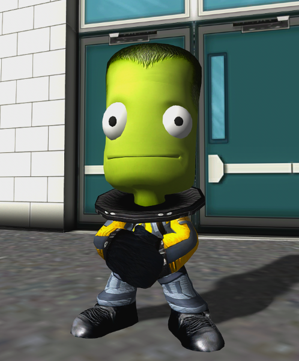
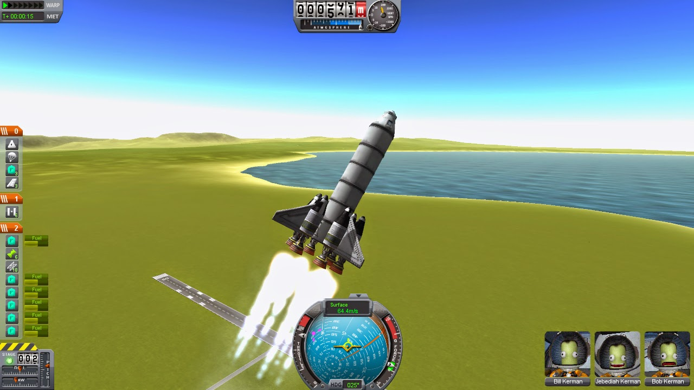
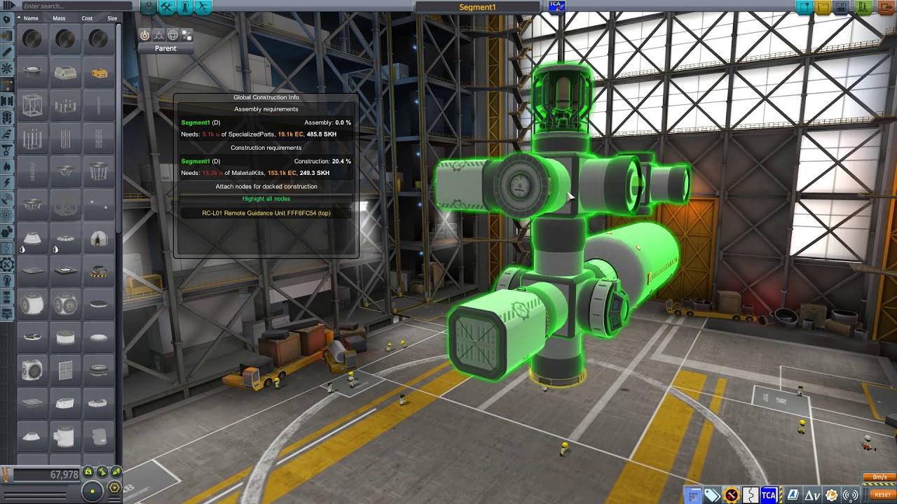
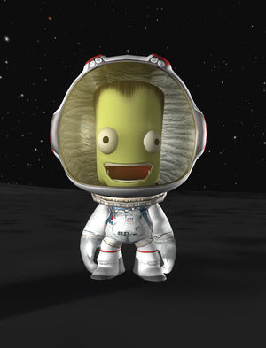

LEVE OS KERBONALTAS AO ESPAÇO!!!
Um jogo de criar foguetes com uma física "realista"
Nossos idió... heróis!
Os kerbais são os habitantes do planeta Kerbin. Esses alhensinhos com cara de idiota almejam as estrelas.
Os mais notórios são: Jebediah, Valentina, Bob e Bill Kerman (sim, todos tem o mesmo sobrenome), eles são os kerbonaltas que começam o jogo consigo, com eles você vai explodir… digo… explorar o sistema Kerbolar (já que o nome da estrela desse sistema é Kerbol).
Mais informações deles no menu superior. ___________________________
Como encendiar... digo... como jogar.
O jogo é simples, temos dinheiro, reputação e ciência. Dinheiro e reputação são adquiridos por meio de contratos, e ciência por meio de experimentos científicos.
Usamos o dinheiro para construir os foguetes e melhorar as instalações do centro espacial.
A reputação, quanto mais positiva, melhores contratos estarão disponíveis. Perde-se a reputação quando se rejeita ou cancela um contrato.
A ciência é usada para desbloquear novas peças para seus foguetes, adquirido por meio de experimentos científicos realizados e contratos específicos.
Dito isso agora é só lançar! (caso isso fosse fácil…)
____________________________________________________________

Delta-V, a aceleração do foguete.
Para lançar, você precisa pegar as peças que estão disponíveis no momento e fazer algo que cumpra algum contrato, mas como saber se algo vai chegar ao destino?
Nesse jogo o Delta-V serve como um bom medidor, pois mede o quanto o seu foguete pode acelerar. Ele é medido na força do motor em relação ao peso da nave, felizmente o jogo já dá o cálculo para nós.
Mesmo com esse facilitador ainda precisamos chegar no tanto requerido, levando em conta as características dos motores, o peso do foguete e sua aerodinâmica, e entre outras mil coisas que não cabe explicar aqui.
Para ver o quanto de Delta-V precisa para acessar os lugares, um “mapa” está disponível no menu superior. ____________________________________________________________ 
Do mais estou indo embora!
Lançando foguete a foguete você vai cada vez mais longe. Fazendo grandes missões, e explodindo coisas por aí.
Kerbal Space Program é um jogo na qual te desafia a pensar de forma criativa para solucionar problemas. (por mais sem sentido sejam na vida real)
Testem, explodam as coisas.
Do mais estou indo embora! ___________________________ 